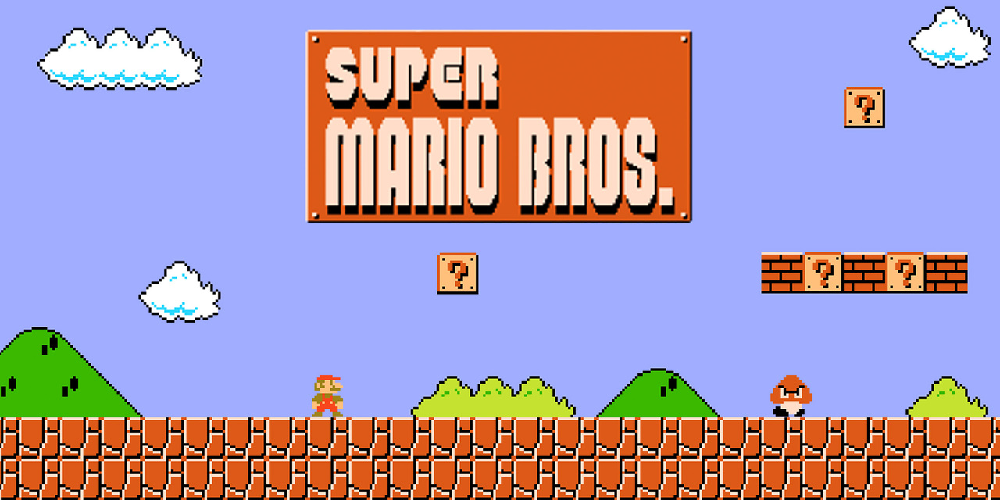

La storia
Super Mario Bros è un videogioco platform sviluppato e pubblicato da Nintendo nel 1985 per il Nintendo Entertainment System. Il gioco segue le avventure dei fratelli Mario e Luigi, che devono salvare la Principessa Peach dal malvagio Bowser. Mario è un idraulico italiano che vive nel Regno dei Funghi. È noto per la sua abilità di saltare e correre. Il giocatore deve guidarlo attraverso livelli pieni di ostacoli, nemici e power-up.
Caratteristiche principali
- Genere: Platform
- Grafica: 2D in stile 8-bit
- Modalità di gioco: avventura e livelli
- Obiettivo: salvare la Principessa Peach
Perché giocarlo?
- Divertente e coinvolgente
- Permette di vivere avventure emozionanti
- Personaggi iconici e un universo ricco di dettagli
I miei personaggi preferiti
| Personaggio | Ruolo | Valutazione |
|---|---|---|
| Mario | Il protagonista principale | ⭐⭐⭐⭐⭐ |
| Luigi | Il fratello di Mario | ⭐⭐⭐⭐ |
| Principessa Peach | La principessa | ⭐⭐⭐⭐ |
Contattami
Hai domande o vuoi sapere di più? Compila il modulo qui sotto: